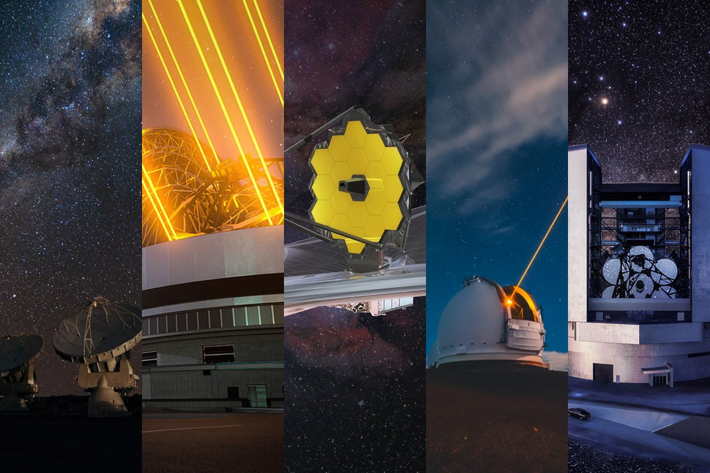

Black Holes
One of the modern mysteries of the universe. How do they form? How do they evolve
and interact with their surroundings? We use a variety of data and techniques to
uncover the properties of these fascinating objects.
Learn More

Galaxy Evolution
Large and complex celestial bodies consisting of stars, dust, gas, and dark matter.
How do galaxies change throughout their cosmic lifetime, with respect to their components?
Learn More

Facilities & Instruments
Check out the main telescopes and instruments we rely on — from ALMA and JWST
to the forthcoming Extremely Large Telescope.
Learn More